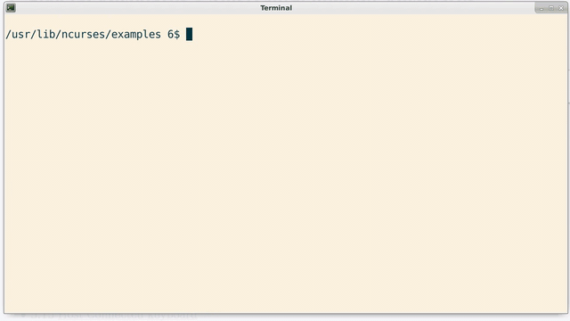

A text terminal is a computer peripheral similar to a mouse and keyboard combination.
However, whereas a modern monitor receives a pixel-wise description of output to display
from the computer several times a second, a text terminal receives a description of
the characters to display only once, and uses an onboard buffer to store that information.
Text terminals are an archaic and largely obsolete technology, but were instrumental to the
development of modern GNU/Linux.
This paper looks at the technology and its ramifications seen in Linux today.
History
The history of Unix is well outside the scope of this discussion.
However, a few facets are relevant to us.
Aside:
Teletype was a trade name of the Teletype Corporation, and was subsequently abbreviated to tty.
The Model 33 was among the most popular of these,
with around 600,000 units sold[2].
First, computers of the 1960's and 70's were expensive.
The "Programmed Data Processor-7," which the first inklings of Unix can be traced to[1],
would have cost the equivalent of about $600,000 in 2020, and shipped with 18 kilobytes of memory.
These computers were bought and maintained by
organizations, with the idea of developing timesharing (i.e., multiuser) operating systems.
In fact, it was once envisioned that computing would be offered as a utility,
piped into homes and businesses like telephone or electricity.
This vision formed the impetus of Multics, the precursor to Unix[1].
Second, the technological state of the 1960's included the teletypewriter,
a device for sending telegrams.
These were, essentially, remote-controlled typewriters, and in the 1960's, they were repurposed to
interface with computers.
The resulting abstraction formed the basis of the input/output mechanism of early interactive computing.
Paper-based terminals persisted well into the 1970's, and later electronic typewriters
sometimes support "terminal mode,"
allowing them to interface with computers via serial cable.
As interactive computing became more popular, hard-copy terminals were phased out in favor of
screen-based entities.
The resulting devices, referred to as text terminals, consisted of a monitor and a keyboard;
the monitor was unlike a modern monitor in that it contained a buffer
(on the order of a few kilobyte[3])
which maintained the text currently on screen, and in that it contained a character-to-bitmap font table to be referenced
when drawing each character; that is, it included its own font.
The computer itself was not required to draw each character on-screen; that was the responsibility of
the terminal.
Rather, the mainframe was only expected to tell the terminal which characters to draw, once.
Users would sit at a terminal, connected to a (possibly distant) machine, would type in
programs, issue commands, enter data, etc.; a serial cable connected this I/O device to the computer,
and it was termed a terminal, since it was located at the terminal end of this cable.
The text terminal was used for decades as the principle means of interactive computing.
Today, text terminals are obsolete, but the abstraction persists in both modern Linux and Unix,
via emulated terminals, virtual terminals, tty device files, and the associated back-end software required to support them.
It's worth noting that the idea of mainframe-driven utility computation suggests that the computer's organization
follows the sctructure of a mathematical tree:
The "root user" would sit at the root of this tree, exercising super-user priveledges over the machine,
while end-users would be positioned at the leaves of the tree.
Two-Way Flow
/dev
/dev/tty Controlling Console
/dev/tty0 Current virtual console
/dev/tty1 First Virtual Console
/dev/tty2 Second Virtual Console
/dev/tty3 Third Virtual Console
.
.
/dev/tty63 63rd Virtual Console
/dev/console System Console
/dev/ptmx/ PTY Master
/dev/pts/ PTY Slaves
The typical terminal is connected to a computer by a full-duplex communication pipeline.
In days' past, this was a serial port.
The Unix environment presents abstractions of these connections as special device files.
Located in /dev, these files are available to each user-space process
using a terminal for input or output.
A program can open, read from and write to a tty file, with the operating system
being responsible for the details.
By this method, a user-space program has access to nontrivial, if elementary, input and output,
by the trivial method of file access.
Moreover, for a Unix system accessed through a terminal, the flow of data
through the tty files represents the entirety of input and output.
Common to all tty devices is the application of a kernel module called
the terminal line discipline, which serves to interpret
input and produce a more human-amiable interface.
This is discussed in more detail in the next section, Controlling the Terminal.
Virtual Terminals: /dev/tty1 thru /dev/tty63
Virtual terminals are the closest re-imaging of the classical terminal
interface to be found in modern operating systems.
They are full-screen terminal displays on the system video monitor,
and are accessible by pressing the key combination CTRL+ALT+F[1-9].
You may log in to different virtual terminals simultaneously,
and thus have a few different sessions with the computer going on at the same time.
In the example below, 'josh' (me) owns the second virtual terminal
(in fact, it's because I'm signed in there!).
ls -lF /dev/tty[0-9]
crw--w---- 1 root tty 4, 0 Mar 31 06:29 /dev/tty0
crw--w---- 1 root tty 4, 1 Mar 31 05:33 /dev/tty1
crw------- 1 josh tty 4, 2 Mar 31 06:28 /dev/tty2
crw--w---- 1 root tty 4, 3 Mar 31 05:33 /dev/tty3
crw--w---- 1 root tty 4, 4 Mar 31 05:33 /dev/tty4
crw--w---- 1 root tty 4, 5 Mar 31 05:33 /dev/tty5
crw--w---- 1 root tty 4, 6 Mar 31 05:33 /dev/tty6
crw--w---- 1 root tty 4, 7 Mar 31 05:33 /dev/tty7
crw--w---- 1 root tty 4, 8 Mar 31 05:33 /dev/tty8
crw--w---- 1 root tty 4, 9 Mar 31 05:33 /dev/tty9
Virtual terminals are more than just a throwback to multiuser operating
system days: They allow access to the machine
without a graphical user interface and, in particular, without the associated
software (namely, without a window server, window manager, and desktop environment).
In modern desktop GNU/Linux distributions, it is often the case that
GUI-based systems software is merely
an additional front-end layer to command-line tools
(a common example is the
Synaptic Package Manager).
That is, the command-line interface usually offers more and finer control over
the machine, through less and more robust software;
virtual terminals are still relevant within the context of server applications.
The user of a modern GNU/Linux distribution running a GUI is usually logged into the
seventh virtual terminal, /dev/tty7.
For completeness' sake, we will briefly explore how it is that the system arrives in this
state.
At the end of the kernel's boot sequence, the kernel launches a single
user-space process with root permissions
[4][5]
(commonly, systemd).
This process then launches the local window system, which, in turn, logs in at
an empty virtual terminal.
Usually, this process is X Window Server; X usually logs in to tty7,
and then launches the graphical user interface
[6].
One can emulate this sequence by logging into a virtual terminal as root and launching
the system's window server by, on this machine, startx.
/dev/tty0 is a somewhat special virtual terminal device files because it is
a synonym for the current virtual terminal.
That is, if you are currently looking at the second virtual terminal, tty2, then data sent to tty0
is sent to tty2 (and not any other terminal).
See
this unix.stackexchange answer for more information, and a demonstration.
The Controlling Terminal: /dev/tty
/dev/tty is a handle to the process's current tty device, if it exists
[7].
It is, effectively, a process-specific file: Any process that is connected to a terminal
may access its terminal here
[8].
Demonstration
Open up two terminal emulators
Navigate each to /dev
In each, confirm that tty exists, is a character device, and has universal write permissions
In each, confirm that writing to tty (e.g. echo "stuff" > tty) does not write to the other
Pseudoterminals: pts/
From
Kernel.org Documentation,
"Pseudoterminals are used to create login sessions or provide other capabilities
requiring a TTY line discipline to arbitrary data-generation processes."
Pseudoterminals have no physical devices connected; rather, they are
intended to pipe information through the kernel's terminal line discipline
by connecting two distinct points in the file system,
a master, /dev/ptmx, and a
slave, a file with an integral filename, found in /dev/pts.
Aside
Historically, there have been
many names for terminal devices.
This essay develops terminal exclusively, for the sake of
clarity and relevance in the modern domain.
The only other synonym in common usage is "console," as in, /dev/tty1
through /dev/tty7 are virtual consoles[9].
Formally, a user-space process opens the common "master" side, /dev/ptmx,
as an ordinary file.
The kernel responds by returning a new file descriptor,
and also by creating a new slave device file in /dev/pts.
The process can then call ptsname(int fd), passing the file
descriptor given by opening the master side, whereby the kernel will return
the pathname to the corresponding slave (terminal) device file.
At this point, the process can treat the slave side of the pipe
as a tty device, and the kernel will modify the stream as
appropriate.
The most common use of pseudoterminals is by terminal emulator programs.
See man 4 ptmx and
man 3 ptsname
for more information.
There are a lot of things you can do with pseudoterminals, and studying
them goes a long way towards understanding the Unix filesystem concept.
What you're doing is, you're piping a stream of characters through the kernel,
and requesting that the kernel modify this stream in a way peculiar to
a kernel module called the "terminal line discipline."
We'll get into more detail about the terminal line discipline in the
next section.
Demonstration
Open exactly two terminal emulators
Navigate one to /dev/pts
List the directory contents and note its entries (should be nonempty)
For each integral entry, write a string to the file, (e.g., echo hello > 2)
The Commander's Chair: /dev/console
This is the superuser's device.
Kernel error and other messages are sent here
[9], and the device
is owned entirely by the root user:
ls -lF /dev/console
crw------- 1 root root 5, 1 Mar 31 05:33 /dev/console
Controlling the Terminal
For all text terminals, bytes flow from the keyboard to the computer, and bytes flow from the computer to the screen.
In particular, bytes do not flow from the keyboard to the terminal's monitor;
the reflection of typed characters on-screen is a function of the computer itself,
and not a function of the terminal.
We can shut off this functionality by the following:
From the shell,
stty -echo
Or, in a Posix-conforming environment,
#import <termios.h>
[...]
// Turn off echo, so typed user input does not show up
assert( tcgetattr(STDIN_FILENO, &term) >= 0 );
term.c_lflag &= ~ECHO;
assert( tcsetattr(STDIN_FILENO, TCSANOW, &term) >= 0 );
This is useful for writing "interactive" or menu-driven programs;
in either case, we must remember to turn it back on again.
It's worth repeating at this point that the terminal proper only sends a stream of bytes, and
merely receives a stream of bytes.
That is, the only method of sending data to the monitor is by the same channel as
printable characters.
As a consequence, it is necessary to establish some common standard for communicating to the terminal
non-printable, or control, characters, such as "newline."
In the US, printable characters were traditionally mapped via ASCII (with the exception of some early IBM mainframes).
The first 32 ASCII characters are control characters, rather than printable;
they include the famous bell character, and both tab and newline (aka, "linefeed").
In particular, in order to delete previously written text, one can print the backspace
character (typically, "\b").
Most of these control characters quickly became antiquated, so that the majority are not widely used.
For instance, ASCII alone does not provide provisions for moving the cursor or scrolling.
As a consequence, ANSI escape sequences were implemented in the terminals.
These begin with the ASCII "escape" control character (decimal 27)
and the left-bracket "[" printable[10], and are entirely ASCII sequences.
Technically, these sequences are terminal-specific, but they are still viable today because modern emulators implement a superset of deprecated terminals' escape sequences.
Within C, to print Hello World! in reverse, we could do
#include <stdio.h>
int main() {
printf("\033[7m Hello World! \033[m");
}
So, by merely printing a special sequence through stdout to the terminal, we have
modified the behavior (state) of the recipient terminal.
A few notes:
033 above is octal format, with decimal equivalent 27.
This "setting" persists (try omitting the trailing \033[m )
I'm such a dork
To send an escape sequence via console, type CTRL+V, then ESC; you should see ^[
There are often hundreds of such escaped sequences,
including such novelties as "set smooth scroll"; most real terminals can even change fonts.
Some escape sequences may take parameters such as coordinates;
the parameters become part of the escape sequence[11].
Terminal input is a different animal. To explain, we must start at the root.
The terminal keyboard sends scancodes to the computer[12].
These are received and interpreted by the terminal device driver, yielding keycodes, then, within the same driver, ASCII.
The settings for this driver can sometimes be accessed via operating-system settings but are typically one-time-only configuration settings.
The information is then passed, within the kernel, to the famous "terminal line discipline,"
purveyor of headaches, which is a kernel module tasked with the majority of computer-side terminal interpretation, and home to the termios struct.
By default it is set to "Cannonical" mode so that, for instance, echo is on and input is buffered line-wise (among many, many other things).
Getting your hands on a termios struct demands a system call; for more information, see Advanced Programming in the Unix Environment.
Aside
The first implemen- tations of Unix were ran without line-discipline, aka "raw mode."[13]
The terminal line discipline is positioned between the keyboard's hardware driver and the read/write system call interface provided by the kernel;
concurrently, it receives all characters coming from the driver (in particular, character combinations such as CTRL+S and CTRL+D).
It is the terminal line discipline's job to map some of these onto special characters.
Special characters are control sequences, but in the other direction.
Aside: X Window System
The X Window System serves a role roughly analgous to the terminal line discipline:
It facilitates the interaction between mouse, keyboard and monitors with application programs,
though it exists in user-space rather than kernel-space.
It is server it controls system resources,
and provides an interface for other programs to interact with[14].
For instance, the CTRL+S key combination is often mapped to the STOP special character;
upon receiving the input bound to this special character, the terminal line discipline stops (and stores) all input and output
to and from the terminal.
This can make it appear as though the terminal emulator has frozen, but it has not.
Neither input nor output is discarded; pressing CTRL+Q (START) will send all queued input to the kernel's read() system call,
and continue sending information out to the terminal monitor.
The terminal then resumes normal operation.
This was more useful in times' past, when the terminal was connected via phone line and its speed relatively slow:
The effect of STOP was to pause scrolling.
In addition, the bell character was traditionally sounded when output was stopped and the terminal
line discipline's buffer became full, thereby warning the user that data was being discarded.
From the command prompt, we can list special characters (and other terminal attributes) by,
stty -a
This lists all bindings to special characters, in addition to other terminal attributes, such as speed.
There are eleven Posix-defined special characters, and most of them can be remapped through the termios struct[15].
In particular, the terminal line discipline is responsible for mapping characters to signals, such as CTRL-D to EOF;
the terminal line discipline is where keyboard signals originate from.
The termios struct is often manipulated by text-based programs,
for instance, to turn off line-buffering and generate an interactive program.
A common library for facilitating this is NCURSES.
Its sister libraries panel, menu and form provide an extension to the basic curses library.

Example from ncurses library
For another example of nCurses usage, check out AlsaMixer (probably already installed)
Closing Notes
Because the purpose of this article is to provide a practical introduction to terminals in general,
I thought it appropriate to cover some of the key points of terminal use in Linux today.
The most novel thing to recognize about terminals is that they exist, from the operating system's
perspective, as an ordinary file.
That you read from it is merely coincidental to what the file is connected to— namely,
a buffer within a monitor or emulator.
Likewise, data sent from the keyboard is not treated "specially" either— it, too,
appears within the operating system's environment as data from an ordinary file.
Aside
Desktop environments serve a role analagous to shells, but in GUI-based environments.
In fact, they are sometimes called Graphical Shells.
My favorite is Cinnamon! Which one is yours?
Shell
Typically, when "interacting" with a computer, data from a tty file is read by a particular program called
a shell. There are many variants, such as the antiquated sh, its modern successor bash,
the disused csh and the feature-laden zsh.
Each of these are ordinary programs, and exist within a running operating system as an
ordinary user-space processes; they have no special attributes or permissions.
They simply read from a file (which might or might-not be your tty file) and execute commands; the commands they "know" are determined
by the shell itself, and can be determined by looking at the PATH environment
variable:
echo $PATH
Each shell command exists as an executable binary file in one of the resulting colon-separated directories.
Emulation
Terminal emulation is notoriously difficult,
and is characterized by which terminal device you are emulating.
The ANSI-standard escape sequences (which are still relevant today)
were usurped almost immediately by the capabilities of DEC's VT-100 terminal.
In almost every case, a new model implemented a superset of a previous model's features,
so that a VT200-series terminal can-do anything a VT100 could-do
[16]
(and the VT100 was ANSI-compatible).
Information about the capabilities of supported terminals is stored locally in a database known as terminfo[17].
Terminal emulators are typically backward-compatable with a VT100 (xterm is backward compatable with the VT220
[18],
but often support additional capabilities, such as color, and have a distinct entry in the terminfo database.
Emulators
Some fun and interesting terminal emulators from around the web (suggestions/recommendations welcome!).
xterm— The standard terminal emulator for X Window System